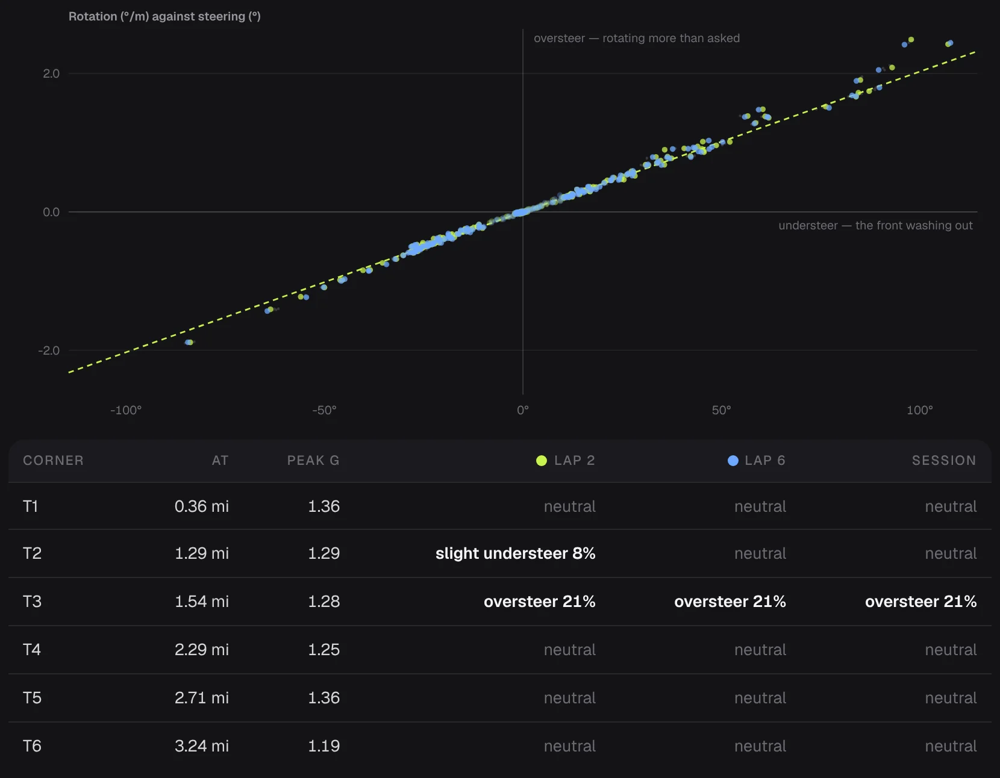

Understeer and oversteer: telling which you have
Understeer is the front tires running out of grip first; oversteer is the rears. Knowing which one you have, and in which part of the corner, turns "the car feels wrong" into something you can fix. Most of the time the first fix is in how the corner is driven.
What they are
- Understeer — the car turns less than you asked. You add steering and it keeps heading toward the outside of the corner. Also called push.
- Oversteer — the car turns more than you asked. The rear steps out and the nose points toward the inside. Also called loose.
- Neutral — both ends reach their limit together, and the car goes where the steering says.
Why they get mixed up
Oversteer is dramatic: the car rotates, you correct, you remember it. Understeer is quiet: the steering goes light and the car does not turn enough, so you add more lock, which does not help. Drivers routinely describe a car as loose when the data shows it was pushing for most of the corner and snapped once at the exit.
Two checks: if adding steering does nothing, it is understeer. If you had to take steering off, or steer the other way, it is oversteer.
Where in the corner
A corner has three phases, and each has its own usual causes:
| Phase | Understeer usually means | Oversteer usually means |
|---|---|---|
| Entry (braking to turn-in) | Too much speed for the corner; turning the wheel too fast; off the brake too abruptly, so the front unloads | Still braking hard while turning; lifting suddenly as you turn in |
| Middle (steady cornering) | More steering angle than the tires can use; carrying a touch too much speed | Lifting off the throttle mid-corner |
| Exit (back to power) | On the throttle too early or too hard with the wheel still turned, pushing the car wide | Too much throttle for the grip, in a rear-drive car |
Fix the driving first
Nearly all of the causes in that table are inputs. Before changing the car:
- Entry understeer: brake a little earlier and release the brake more gradually as you turn, so the front tires stay loaded.
- Mid-corner understeer: try less steering, not more. A tire turned past its best angle grips less.
- Exit understeer: wait to add throttle until you can start unwinding the wheel.
- Oversteer when lifting: be smooth coming off the throttle, and avoid lifting mid-corner at all. If the corner needs less speed, take it off before turn-in.
- Exit oversteer: feed the throttle in as the wheel straightens.
If you are new to finding the limit, do this with an instructor in the car. Recovering from a slide is a skill to learn deliberately.
Then the car
If a corner behaves the same way lap after lap with clean inputs, the car may want a change. The usual order, cheapest first:
- Tire pressures. The end that is sliding often has pressures out of their working range. See track-day tire pressures.
- Alignment. More negative front camber is the common cure for a road car that pushes on track.
- Anti-roll bars and dampers. Stiffening one end generally takes grip away from that end, so a stiffer rear bar reduces understeer and a stiffer front bar adds it.
Make one change at a time and write it down — see keeping a setup notebook. Have alignment and suspension changes done by someone who knows the car.
Balance in Track Evolution
When you import a recording that carries the car's steering angle and rotation — a Corvette or Cadillac PDR video, for example — the session's Grip tab draws a balance chart: how much the car rotated against how much steering it was given, with a dashed line for how this car normally responds. Points above the line are oversteer, below it understeer.
Under the chart, each corner gets a reading for every selected lap and for the session: "T1 understeer 14%, T7 neutral, T10 slight oversteer 9%". Corners are numbered from the start/finish line; this is the app's own numbering, not the circuit's.

The reading is relative. Each corner is compared with how the car behaved on average across the session, so a car that pushes everywhere reads neutral everywhere. What stands out is the corner that behaves differently from the rest.
Balance is on the web and in the iPhone and Android apps, and is part of Track Evolution Pro.